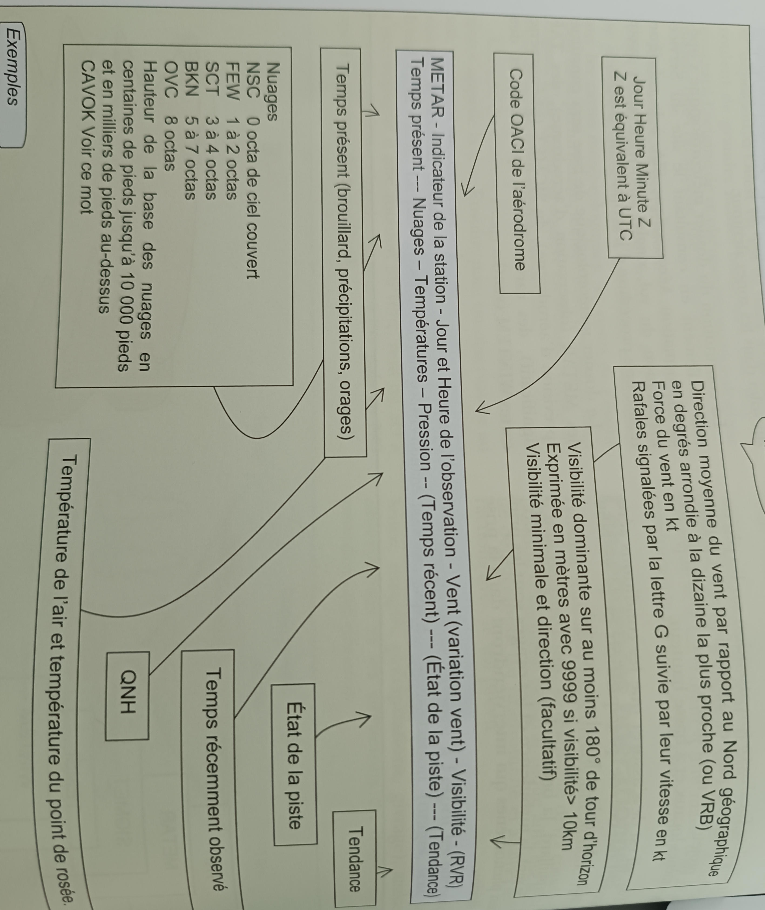
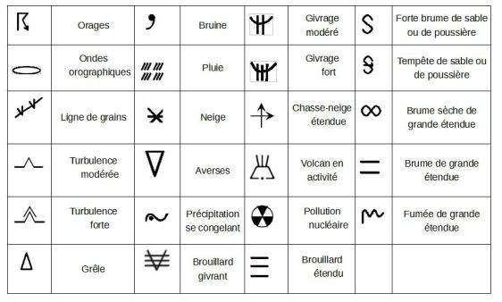
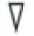
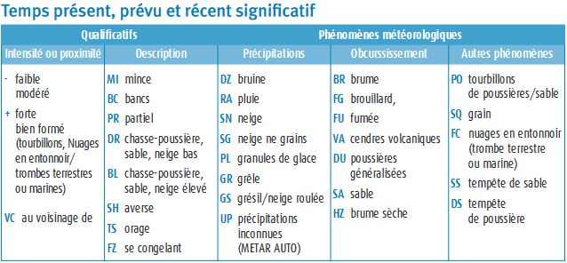

Guide aviation
Guide aviationPDF · 8,0 MoMETAR
- METAR --> observation régulière pour l'aviation diffusé toutes les heures ou toutes les demi-heures pour les gros aéroports.

- TAF (prévision) court : tous les 3h valable 9h ; TAF long tous les 6h valable 24h ou 30h
- «Message spécial d'aérodrome, émis quand un changement significatif des conditions météorologiques a été observé».
SPECI.
- Le METAR peut contenir une partie de prévision TEMPO (temporairement) --> tendance de prévision d'atterrissage valable pour les deux heures qui suivent l'observation.
- Vous prenez connaissance du TAF de Rodez Marcillac: LFCR 140800Z 1409/1418 25008KT 4000 RADZ OVC002 BKN025 OVC250 TEMPO 1409/1412 1500 DZRA OVC002 BKN020 BECMG 1412/1415 28006KT BKN020 SCT050 BECMG 1415/1418 SCT020 SCT050
Le code TEMPO indique une chute de la visibilité à 1500 m :
Entre 9 h à 12 h UTC.
- Dans un message, le code 'CAVOK' indique généralement :
L'absence de nuages en-dessous de 5000 ft. - Dans un message, le code 'CAVOK' indique une visibilité minimum de...
10 km. - Dans un message, le code 'CAVOK' indique l'absence (observée ou prévue) d'éléments météo défavorables. Toutefois, il n'exclut pas la présence :
De vent fort.
- LFBL 140800Z 1409/1418 31004KT 7000 BKN010 TEMPO 1409/1411 29010KT 4000 SHRA SCT005 BKN010 BECMG 1411/1413 9999 SCT020= De 9 h à 11 h UTC, en dehors des variations temporaires, la base des nuages est prévue à :
1000 ft AAL. - Vous prenez connaissance du TAF d'Ajaccio Campo dell'Oro :LFKJ 051100Z 0512/0521 22006KT CAVOK BECMG 0517/0519 06006KT= La fin du message, à partir du code BECMG, indique que le vent pourrait tourner :
De façon régulière entre 17 h et 19 h UTC. - 'BECMG FM 1100 -SHRA' dans un METAR signifie
Deviendra, à partir de 11h UTC, averses de pluie faibles. BECMG FM (BECOMING FROM) : devenant à partir de 11h.
- Dans un code METAR, l'abréviation VC est un qualificatif du temps présent...
à une distance comprise entre approximativement entre 8 et 16 km du point de référence de l'aérodrome. VC : vicinity (au voisinage de) - Dans un message METAR, le terme 'VC' signifie :
Au voisinage. situé entre environ 8 et 16 km par rapport au point de référence d'un aérodrome
- Les rafales de vent sont indiquées dans un METAR, quand :
Les rafales sont supérieures au vent moyen d'au moins 10 kt.
- Dans un METAR, la présence de brouillard (FG) indique une visibilité :
Inférieure à 1 km. - Dans un METAR, la présence de brume (BR) indique une visibilité comprise entre :
1 km et 5 km. - Le plafond nuageux est défini par une nébulosité au moins égale à :
BKN. avant c'est couverture nuageuse - Une nébulosité de 5 à 7 octas est indiquée dans un METAR par l'abréviation :
BKN. FEW : nuages rare 1 à 2 octas. SCT : nuages épars c'est 3 à 4 octas. BKN : nuages fragmentés 5 à 7 octas. OVC : ciel couvert 8 octas. - Le code NSC :
Indique qu'il n'y a pas de nuages significatifs. NSC (No Significant Clouds) : nuages non significatifs. - Quand l'information de visibilité verticale n'est pas disponible (ciel invisible), il est indiqué dans un message METAR, SPECI ou TAF:
VV/// - La base des nuages, rapportée dans le METAR, est la hauteur au-dessus...
Du niveau de l'aérodrome. - Vous prenez connaissance du METAR d'Aurillac : LFLW 100900Z 08003KT 2500 -DZ BR BKN002 01/01 Q1016= La visibilité horizontale est de :
2500 m. - Vous prenez connaissance du METAR de Toulouse Blagnac :LFBO 060800Z 29010KT 9999 SCT016 BKN050 19/16 Q1019 NOSIG=Les nuages qui sont l'objet du code SCT016 couvrent :
Moins de la moitié du ciel et leur base est à 1600 ft. - Dans un METAR, le codage suivant '8000 3000SW BR' signifie :
Visibilité dominante de 8000 m et minimale de 3000 m dans le Sud-Ouest avec de la brume.
Nuages
- Le nuage qui indique la présence de courants verticaux importants à proximité du sol est
Le Cumulus. - Identifiez le type de nuage qui vous signalera une forte possibilité que l'air est instable :
Le Cumulonimbus.
- Les conditions de vol les moins turbulentes se rencontrent...
Sous un plafond de stratus. - Un nuage considéré comme étant extrêmement dangereux peut être identifié par :
Son sommet qui est à environ 35000 ft au-dessus du sol.
Codes météo
- Symboles TEMSI (TEMps SIgnificatif)


- Que représente ce symbole

sur une carte de temps significatif ?
Il faut TOUS les connaître !

- Le code météorologiques '+SHRA' / 'FZDZ' / etc indique
Forte averse de pluie. / Bruine se congelant modérée. / etc Il faut TOUS les connaître ! - LFRN 171100Z 17008KT 9999 FEW021CB SCT030 19/16 Q1009 RETS NOSIG=
D'orages récents. REcent TS orage
Physique
- Le givrage :
Se forme sur les ailes et rotors, entrainant une diminution progressive des performance de l'appareil. - La turbulence thermique dépend : 1 - de l'environnement 2 - des contrastes du sol 3 - du degré d'instabilité de l'air 4 - de la compétence du pilote à distance
1 - 2 - 3. - La circulation du vent sur le relief va générer de la :
Turbulence de frottement. - Indiquer les conditions pour lesquelles les performances d'un aéronef sans équipage à bord seront les meilleures :
Par temps froid, à proximité du niveau de la mer et avec une pression atmosphérique élevée. - A une hauteur de 100 mètres vous pouvez estimer que la vitesse du vent est :
50% plus fort qu'au sol.
- Les dangers pour un aéronef sans équipage à bord causés par la présence d'un cumulonimbus ou d'un nuage d'orage peuvent être rencontrés...
Dans un rayon de 15 km autour du nuage. - En atmosphère standard, la baisse de température en gagnant de l'altitude est de :
2°C par 1000 ft. - Près du sol, la turbulence résultante du réchauffement de la surface se produit habituellement...
En début d'après-midi. - Un vent de 20 kt correspond à une vitesse de l'air de :
10 m/s. - L'énoncé qui décrit le risque principal associé à la contamination par le givre de votre aéronef sans équipage à bord est :
L'accumulation de givre diminue la portance aérodynamique et affecte les performances de vol. - La durée de vie d'une perturbation océanique aux latitudes tempérées est d'environ... 3 à 6 jours.
- En France métropolitaine à 12H UTC, en l'absence de vent fort, vous trouverez de préférence les ascendances thermiques sur les versants exposés :
Au Sud. - Je m'apprête à faire voler mon UAS sous une température de -10°C. Sélectionnez la bonne réponse (un choix):
Préchauffer la batterie avant le vol.